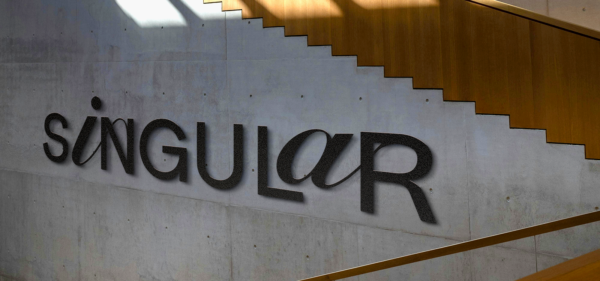
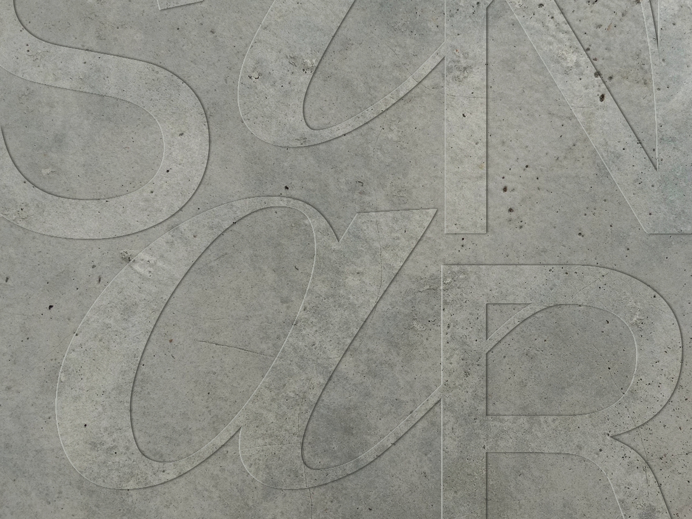
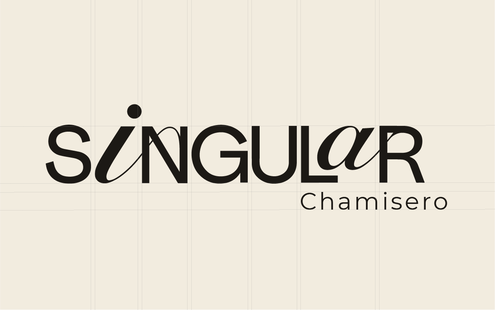
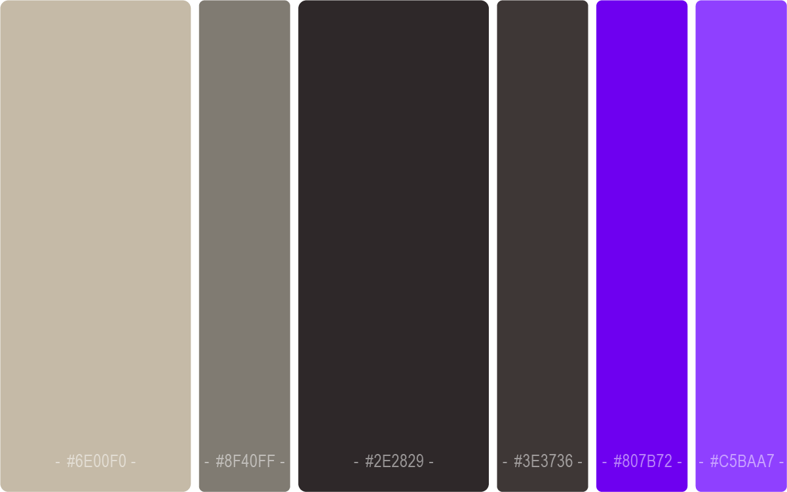
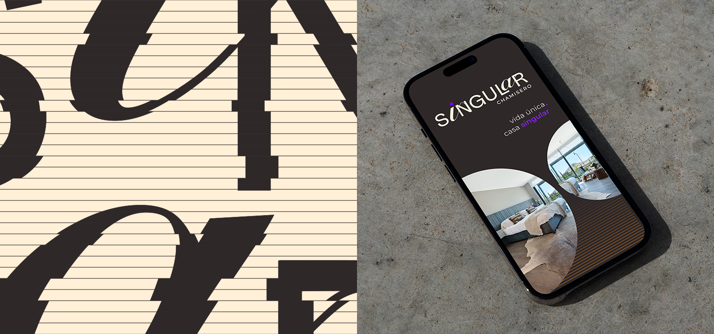
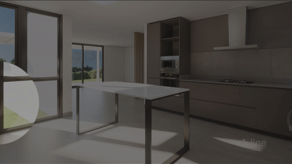
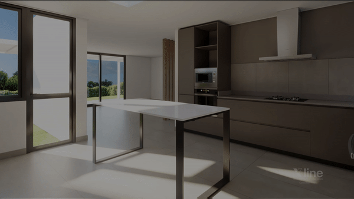
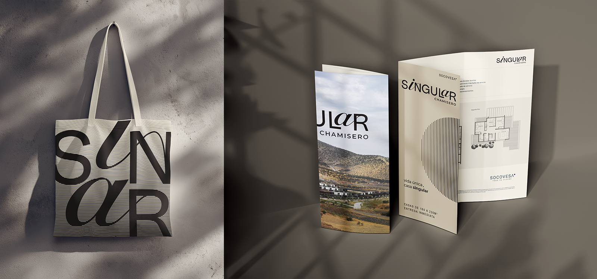
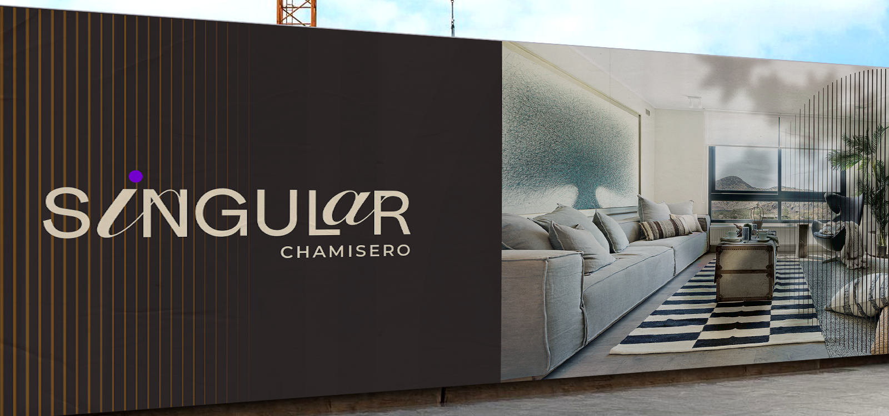

Singular
Branding Inmobiliario
Singular es un proyecto de la Inmobiliaria Socovesa, diseñado por el arquitecto Matías Klotz y ubicado en Chamisero.
Es un proyecto inmobiliario dirigido a un sector de ticket alto, que se diferencia de la competencia por la búsqueda de soluciones de habitar innovadoras, con una fuerte impronta estética sin perder funcionalidad.
La identidad busca generar en el espectador una experiencia de diseño alternativa pero efectiva, comunicando sofisticación, atrevimiento y fluidez.


La construcción del logotipo se logró a partir de la combinación de las tipografías Real Gard y Snell Roundhand, dos tipos absolutamente distintos que combinados en la justa medida generan ritmo y estructura a la vez.
Los elementos gráficos hacen referencia a la forma de los elementos arquitectónicos del proyecto, teniendo el palillaje como protagonista.
El color busca generar contrastes en una armonía de tonos tierra, con referencias a la madera. Por otro lado, el morado usado como acento genera identificación con la marca madre, Socovesa.






